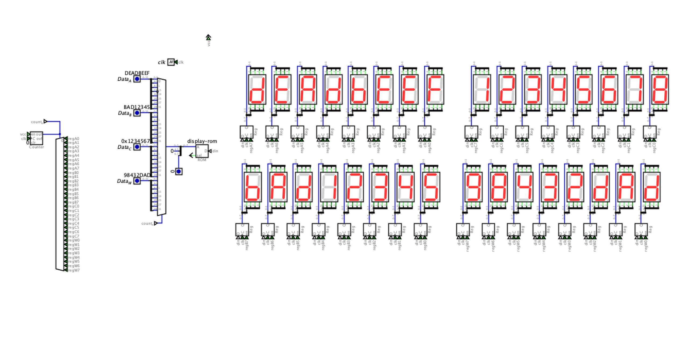

Dispatch · Display
Thirty-two digits. One ROM. Latches so they stay bright.
Four 32-bit values on screen at once: A, B, C, and writeback. The textbook BCD decoder blanks A–F. K-maps were correct and physically absurd. Scan plus latches won.
Four 32-bit values on screen at once — the three LUT3 operand buses plus the ALU writeback. Each row is eight hex digits; thirty-two seven-segment displays total, live as the datapath moves. The display is not a gadget bolted on. alu-display-control.dig mirrors the slice.
Attempt one: 74HC4511. Textbook BCD. It only decodes 0–9. Inputs above nine blank. Useless for hex. Attempt two: 74HC4543. Same story. Attempt three: Boolean minimization from Karnaugh maps. Correct, and a forest of gates. Rejected for copper.
The answer is a shared font ROM and a scan. A 5-bit counter walks thirty-two nibbles. One AT28C16 holds the hex font. 74HC373 latches hold the last pattern so the digits stay at full brightness even though the ROM only writes one digit per cycle. Without the latches each digit is on 1/32 of the time — dim and visibly multiplexed.

Fig. — One ROM, many digitsScan · latch · AT28C16 font
Sixty-nine ICs for the wall. Five bits covers exactly thirty-two digits. No 74HC00 reset hack at count 24. That was leftover from an earlier three-row sketch. Brightness does not depend on scan rate. Operand changes show up on the next pass for that digit — within one frame.